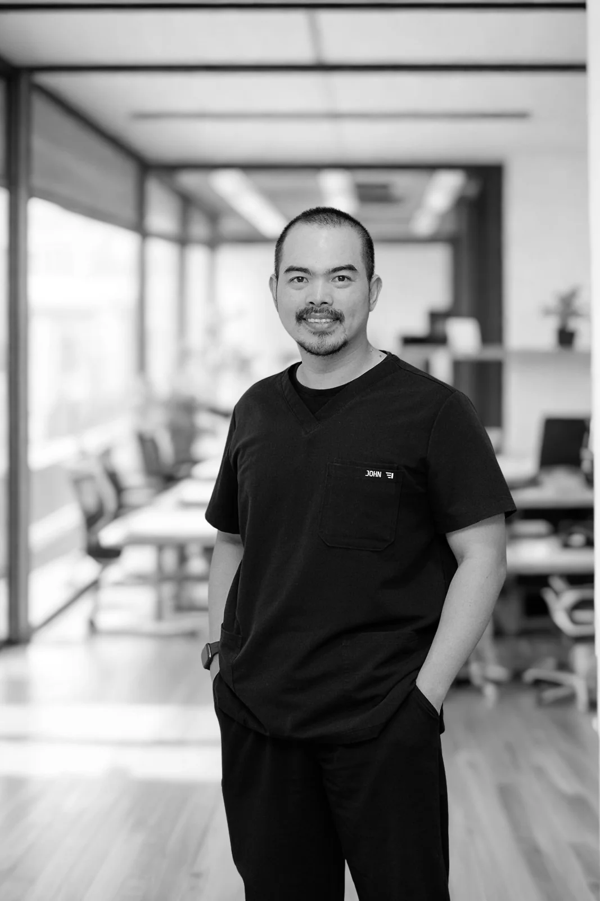
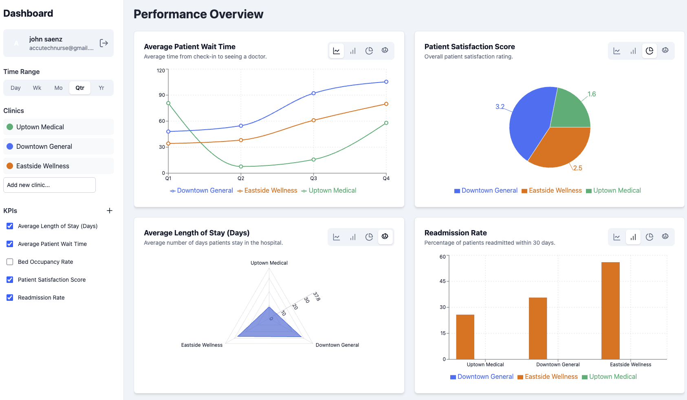

NursePod
Clinical workflow tools
Templates and automations that fit how nurses actually work through a shift.
Registered Nurse · Software Builder
Automation for general practice, designed and tested inside real clinics by a nurse who works in them.

I spent five years as a nurse in GP clinics, buried in paperwork that took time away from patients. With a background in information systems, I started automating the workflows I knew were broken. Other practices wanted the same tools, and ClinicIQ Solutions was the result.
Designed by a clinician, for clinicians.
The product suite
NursePod
Templates and automations that fit how nurses actually work through a shift.
cIQventory
Stock management that knows what a practice really carries and reorders.

PIPQI
Practice Incentives Program work, kept current with RACGP requirements.

MedPlan AI
Care planning support that drafts, and respects the clinical judgement that signs off.
Three habits that make the work stick once a practice adopts it.
The problems I solve are ones I have lived with as a nurse, not ones I read about in a brief.
Every tool is tested against real clinical workflows and RACGP requirements before it ships.
Clinicians trust tools from someone who understands their day, their compliance load, and their constraints.
Practice managers, GPs, practice nurses, and partners are all welcome. No hard sell, just a conversation about where the admin is leaking time.